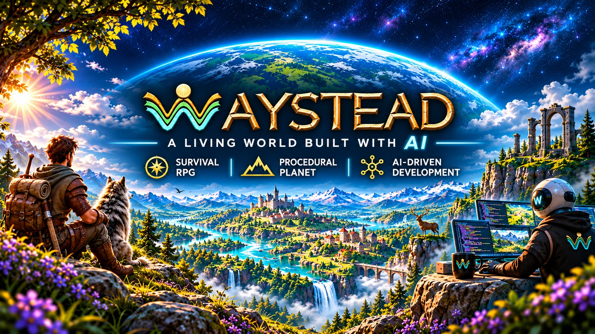
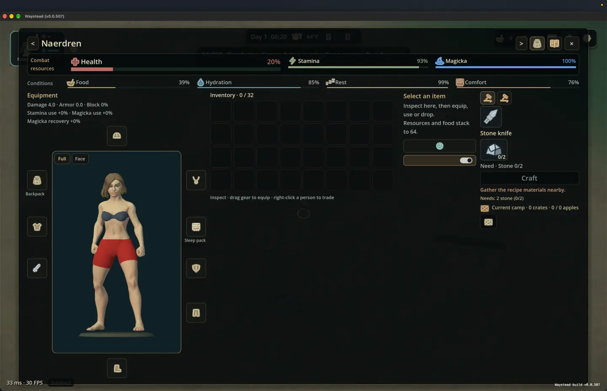

Persistent
State.
Intent, living specs, task claims, decisions, and recovery context stay attached to the repo across sessions and tool switches.
Decapod Labs · Metacognitive Governance Kernel
A new way to manage your agentic engineering workflow.
Decapod is an application your coding agents call to keep engineering work aligned with your intent, within clear boundaries, and backed by evidence. Its agent-agnostic, daemonless metacognitive governance kernel works with Codex, Claude Code, Cursor, Antigravity, Pi, and other compatible agents. Each call runs, returns structured guidance, and exits—leaving living specifications, task ownership, durable context, and exact-commit proof available across sessions.
cargo binstall decapod && decapod init
One initialization per project. No daemon, no signup.
Now just tell your agent what you want.
INTRODUCTION · DECAPOD LABS
See how Decapod gives coding agents shared memory, curated standards, isolated worktrees, and commit-bound checks—without replacing the agents or tools you already run.
FEATURES / THE GOVERNED WORKFLOW
Intent, living specs, task claims, decisions, and recovery context stay attached to the repo across sessions and tool switches.
Each task works in an isolated branch and Git worktree while repository rules and authority gates fail closed before publication.
Validation binds configured check evidence to exact candidate commits and target bases—and expires immediately when code changes.
Keep Codex, Claude Code, Cursor, Antigravity, or Pi. Different agents coordinate on one project through one CLI and structured RPC.
OPERATING MODEL & ARCHITECTURE
Describe the outcome in plain prose using the editor and coding agent you already run. Before writing code, your agent queries the global Constitution, resolves task context capsules, updates versioned living specifications, and isolates work in its own Git worktree.
Durable memory, explicit task ownership, and structured handoffs preserve state across sessions and teammates. Failed checks surface recovery guidance, and decapod validate binds proof to exact commits under standing repository policy—admission never self-grants merge authority beyond your forge rules.
THE GOVERNED WORKFLOW · 14 CAPABILITIES
Your coding agents call Decapod throughout the job. The application keeps decisions, curated domain knowledge, ownership, boundaries, and validation evidence available across tools, engineers, and sessions.
Create, claim, prioritize, hand off, and complete work with an explicit owner and recorded outcome.
Task lifecycle 02 / CONSTITUTIONSensible defaults for agent decisions, backed by curated engineering golden paths, research, architecture, and software-business knowledge. Embedded in the kernel, agent-queryable, and open to community PRs.
Explore the Constitution 03 / INTENTKeep the original request and the agent’s interpretation in reviewable, versioned specifications right beside the source.
Intent & decisions 04 / CONTEXTResolve the relevant rules, architectural boundaries, and project context for a task with traceable provenance.
Agent-first architecture 05 / WORKSPACESGive work its own branch and isolated Git worktree, with optional container boundaries so primary branches stay clean.
Workspace model 06 / CONCURRENCYCodex, Claude Code, Cursor, Antigravity, and other agents coordinate in one project through task claims, custody, and handoffs—even across engineers.
Multi-agent workflows 07 / MEMORYKeep knowledge, decisions, and work state available across ephemeral sessions, agent tools, engineers, and handoffs.
Persistent context 08 / BOUNDARIESMake repository rules, ownership, and delegated execution boundaries explicit before edits or commands run.
Bounded execution 09 / VALIDATIONRun required checks, inspect structured failure guidance, repair supported problems cleanly, and revalidate on the same work branch.
Proof & validation 10 / EVIDENCETie validation evidence to the exact candidate repository state, base commit, and checks that produced it.
Proof contracts 11 / DELIVERYKeep PR creation and merge gates bounded until required checks, living specs, checkpoints, and repository policy are satisfied.
Delivery workflow 12 / HISTORYPreserve the chain from original intent and assumptions to work, decisions, receipts, and completion.
Artifact inventory 13 / RUNTIMEDecapod runs when an agent calls it, returns structured results, and exits cleanly. Governance state lives beside your repo.
Mental model 14 / INTERFACEKeep your coding agents. They invoke one surface for orientation, claims, reflection, spec refreshes, and validation.
Agent APISHOWCASE / DECAPOD AT WORK
Software is built in many domains. Decapod keeps agent work coordinated, bounded, and verifiable across them. Here are two very different applications.
01 / GAME DEVELOPMENT
Waystead is a procedurally generated, planet-scale survival RPG and dungeon crawler by ABAXI in active development. Its Godot codebase spans world generation, character systems, persistence, rendering, and delivery.
Decapod governs the coding agents working across those systems—preserving task ownership, context, boundaries, and evidence as the project evolves.
Use Decapod in your project





01 / 07 · IN DEVELOPMENT
Character creation, appearance, identity, and the start of a personal journey.
02 / STARTUP & MULTI-AGENT ENGINEERING
Agents can build the software behind an ambitious startup: features, infrastructure, identity, billing, and delivery. Decapod governs the work as teams and agents coordinate, review, and ship.
Parallel issue work, revalidation after upstream merges, and independent verification.
November 18, 2026 — three Ghostty terminals, three separate Antigravity CLI instances, each running its own Carbon/Hydrogen swarm.
RESEARCH & THESIS
Decapod Labs investigates how software engineering moves from brittle prompt supervision to verifiable delegation across heterogeneous agents.
Intent, Custody, Trajectory, and Proof: Toward Accountable Execution in Agentic Software Engineering
Examines the model where an engineer can type the outcome and walk away without surrendering fleet coherence across diverse coding agents. Formalizes four kernel primitives—Intent, Custody, Trajectory, and Proof—and proposes a candidate thin-waist interoperability profile across agent runtimes.
Pre-results technical report — paper, terminology, and reproducible evaluation harness public; empirical benchmark not yet executed.
Why repository-resident custody replaces prompt repetition
Coding agents rarely fail because they cannot edit syntax—they fail when intent, prior architectural choices, task ownership, and boundary constraints evaporate between runs. Putting continuity and proof inside the repository ends the loop of re-explaining and redoing work.
LOCAL FOREVER VS. TEAM CLOUD
There are no artificial rate limits, local seat caps, or forced logins on the open local kernel. Choose Cloud only when multiple engineers or shared repositories need hosted custody and seat management.
$0 · MIT/Apache local kernel
Run Decapod directly inside any Git repository with Codex, Claude Code, Cursor, Antigravity, or Pi.
decapod validate gates.$50/mo or $552/yr per human-repo unit
Start at 1 repository × 1 contributor ($50/mo, or $552/yr with an 8% annual discount). Every Cloud seat includes:
OBSERVED EXECUTION · REFERENCE RECORD
To inspect how Decapod operates in an end-to-end terminal run, watch the native Pi session call Decapod, inspect a rejected check, repair the source, pass fresh validation, and publish GitHub PR #7.
Selected moments from historical session pi-1758-tui-06 (Pi 0.73.1 + Decapod 0.148.8) at original tool speed.
Bring your own agents. Decapod governs their work.